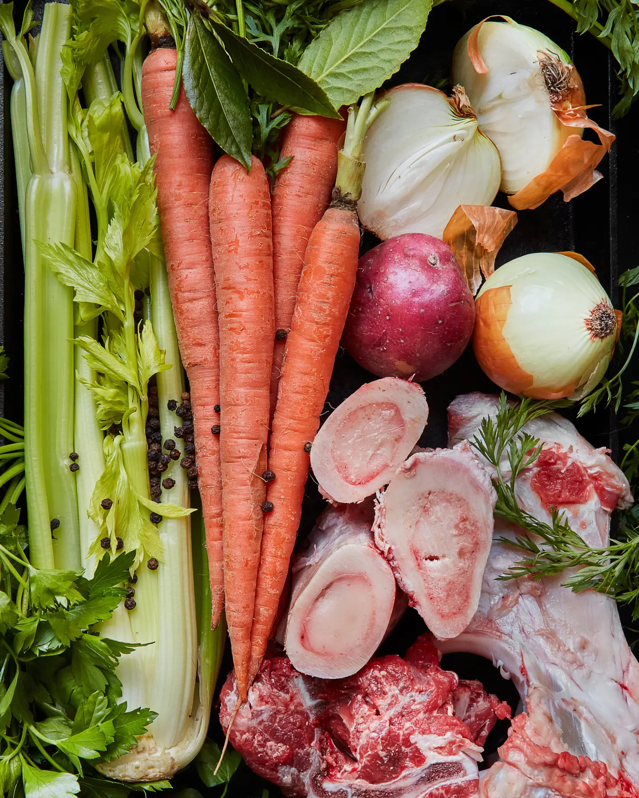

How to Make Beef Stock
Meaty, sticky stock that’s rich in flavor and body is just a simmer away.
Mild, versatile chicken stock acts as the kitchen's workhorse, but beef stock steps in for the heavy-duty work. With plenty of flavors to sip on
its own as a broth, plus the body to support gravies and sauces, beef stock is absolutely worth the time it takes to make. At The Ruby Brink on Washington
State's Vashon Island, butcher and co-owner Lauren Garaventa uses it in tandem with chicken broth as the base of the restaurant's noodle soups, a method she picked up from her Mexican grandmother.

What you need
- Beef bones, the more marrow, the better.
- Assorted vegetables, herbs, and aromatics, including, ideally, one potato
- 20-quart or 20L stainless steel stock pot
- Fine mesh strainer
What to do
Step 1: Fill up the stockpot with bones and water.
While other recipes direct you to roast or boil the bones before starting, Garaventa skips that step to retain more nutrients from the bone.
Instead, she starts by filling the stockpot at least halfway up with beef bones—it's a higher ratio than with chicken stock.
Fill the pot the rest of the way up with cold water.
Step 2: Bring to a boil, then turn down to a simmer.
Place the stockpot over high heat on the stove and bring it all the way to a boil. Once it boils, turn to a simmer and leave it alone
for "as long as you can stand," says Garaventa. For her, that usually means about 24 to 36 hours of simmering on the stove.
Step 3: Add vegetables, herbs, and aromatics.
Two to three hours before the stock finishes simmering, Garaventa adds her vegetables, like the traditional stock options of onions,
celery, and carrots; aromatics such as peppercorns and bay leaves; and herbs like parsley and thyme. In a non-traditional twist,
Garaventa says that she likes to add a potato at this point because it improves the consistency and flavor of the broth. Let it simmer for a few more hours.
Step 4: Allow the broth to settle and strain it, reduce it if desired.
After simmering, turn the heat off under the pot and let everything settle to the bottom, then strain the liquid out through a fine mesh sieve.
Once just the liquid remains, Garaventa says she often finishes by reducing it for another half-hour to an hour. Otherwise, the stock is ready for use or storage.